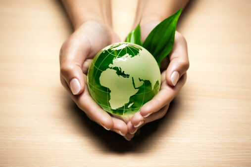

CIRCLE CLIMATE
CIRCLE CLIMATE CHANGE AWARENESS
ABOUT US
GET INVOLVED
CIRCLE CLIMATE 
At Circle, our mission is to inspire, educate, and empower individuals and communities to take meaningful action in combating climate change. We believe that through collective effort, sustainable practices, and widespread awareness, we can build a greener, more sustainable future for generations to come.

Raise Awareness
We aim to promote a deeper understanding of climate change — its causes, effects, and solutions. Through campaigns, workshops, and online resources, we engage the community in meaningful discussions about the urgent need for action.
Promote Sustainable Practices
Our goal is to encourage sustainable living by supporting practices like reducing waste, conserving energy, and adopting renewable alternatives. Together, we can make environmentally conscious choices that benefit both our planet and our communities.
Community Engagement
We believe that local action creates global change. Circle organizes community projects such as tree planting, clean-up initiatives, recycling drives, and educational workshops. We invite individuals and groups to actively participate in climate-positive actions.
Empower the Youth
Youth are the future, and at Circle, we are committed to nurturing a new generation of environmental leaders. Through schools, youth clubs, and online platforms, we equip young people with the knowledge and skills they need to advocate for the planet.
Collaboration for Greater Impact
No single organization can solve the climate crisis alone. That’s why we actively collaborate with like-minded organizations, governments, and local leaders to strengthen our collective voice and broaden our impact.
Advocate for Climate Policies
We advocate for policies that prioritize climate justice and environmental protection. By supporting initiatives that promote a green economy and sustainable development, we push for systemic change at local, national, and global levels.
Monitor & Measure Progress
To ensure we are making real change, Circle regularly evaluates the impact of our initiatives. We set measurable goals, track our progress, and remain accountable to our community, partners, and the environment.